Livianos
Camionetas · 4x4 · furgonetas · pick-ups de trabajo
- Ballestas posteriores nuevas o reforzadas
- Levante de 2 pulgadas
- Amortiguadores y espirales
- Bujes de mesa en poliuretano
Taller de ballestas · livianos y pesados
Somos fabricantes de hojas de resorte y paquetes completos bajo pedido, varolamos, cambiamos bujes y reforzamos la suspensión de camionetas, camiones, buses y volquetas. Trabajo real y garantizado, en nuestro taller de Calderón – San José de Morán, diagonal al UPC, o a domicilio en Quito.
WhatsApp y llamadas: 0961 333 180
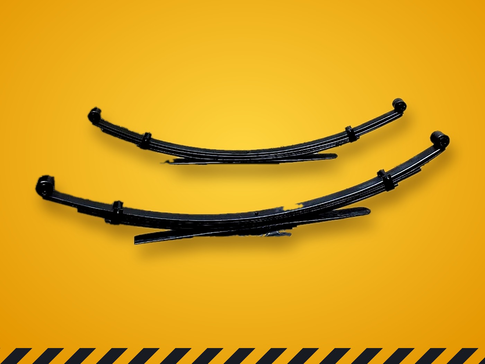
Para quién trabajamos
Camionetas · 4x4 · furgonetas · pick-ups de trabajo
Camiones · volquetas · buses · flotas de carga
Servicios
Si no ve su caso en la lista, escríbanos con una foto. Casi todo lo de suspensión se puede fabricar o reparar.
Copiamos la hoja de muestra o la hacemos con sus medidas: largo, ancho, espesor y curva.
Hoja maestra, auxiliares, perno central y abrazaderas, listo para montar.
Le devolvemos la curva a un paquete que se bajó con el uso, para que el vehículo recupere su altura.
Bajamos un paquete demasiado alto o desparejo y nivelamos el vehículo de lado a lado.
Formamos el ojo en prensa a la medida exacta del buje y cambiamos bujes gastados.
Más hojas o hojas más gruesas para vehículos que trabajan cargados todos los días.
Más altura para camionetas y 4x4 que salen a caminos de tierra.
Venta e instalación para vehículos livianos y pesados.
Bujes de mesa, de ballesta y de barra que duran más que el caucho común. Abrazaderas U a medida.
Así trabajamos
No somos un concesionario. Somos un taller donde cada hoja se calienta, se forma y se curva a mano, según lo que el vehículo necesita.
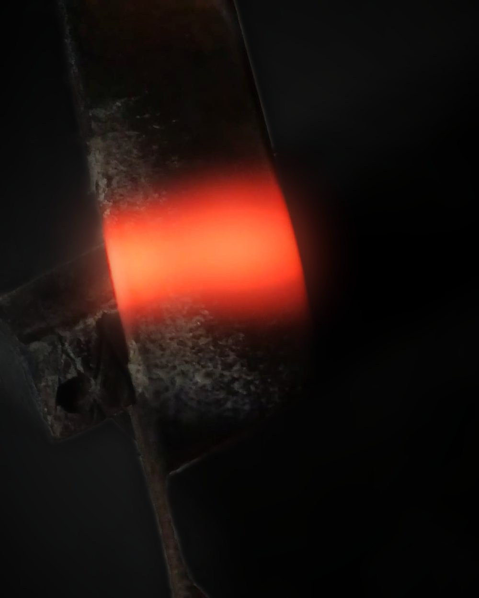
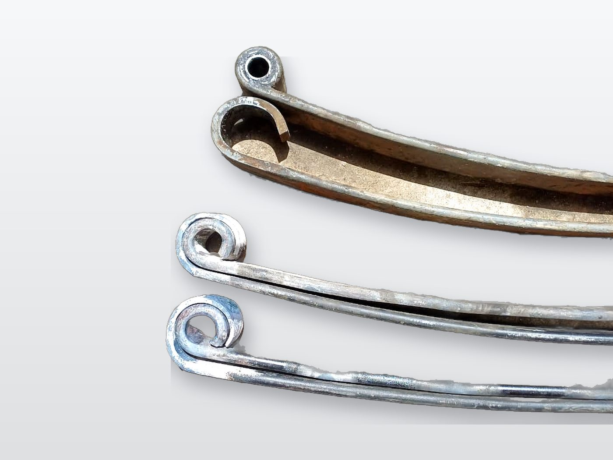
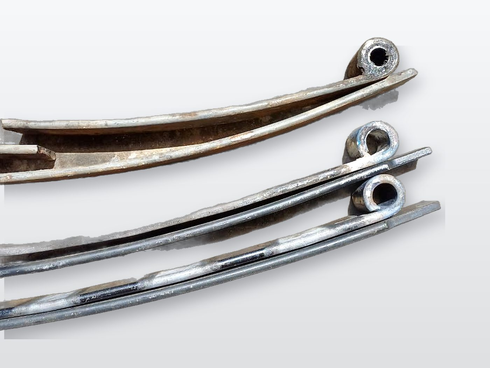
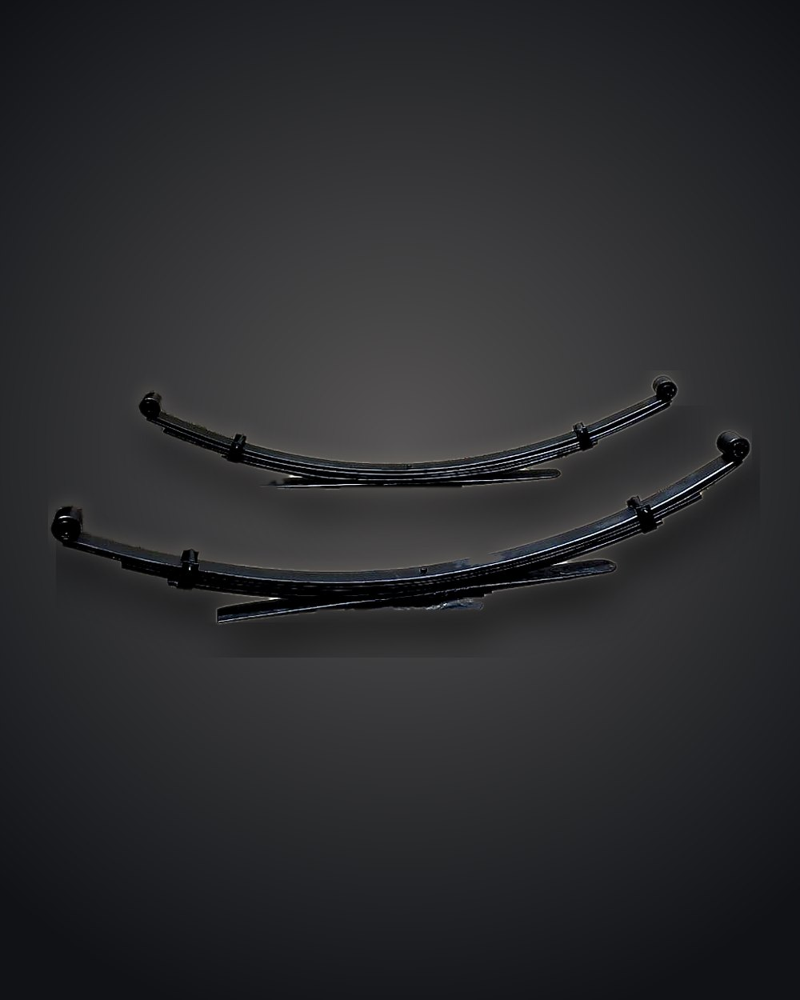
Trae la hoja vieja, el paquete completo o nos manda foto y medidas por WhatsApp. Si se rompió, sirve el pedazo o la hoja del otro lado.
Cortamos la platina al largo exacto y la hoja entra al horno para calentarse pareja.
En la prensa enrollamos el ojo de la hoja a la medida del buje, para que entre justo y no quede flojo.
En la mesa de trabajo varolamos: damos o quitamos curva hasta igualar la muestra o la altura que se busca.
Ordenamos las hojas, ponemos el perno central, las grapas y los bujes nuevos de poliuretano o caucho.
Se lo entregamos listo o lo montamos en el taller o a domicilio, con abrazaderas U nuevas.
Trabajos del taller
Fotos de pedidos reales de clientes. Cada pieza se fabricó a la medida de la muestra que trajeron.
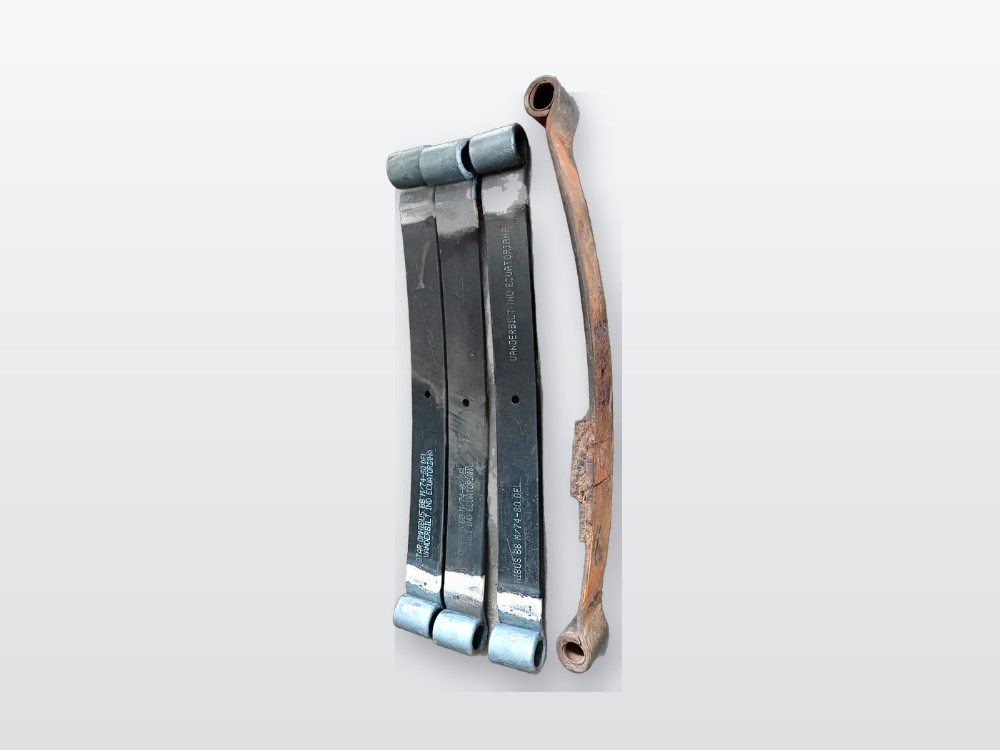
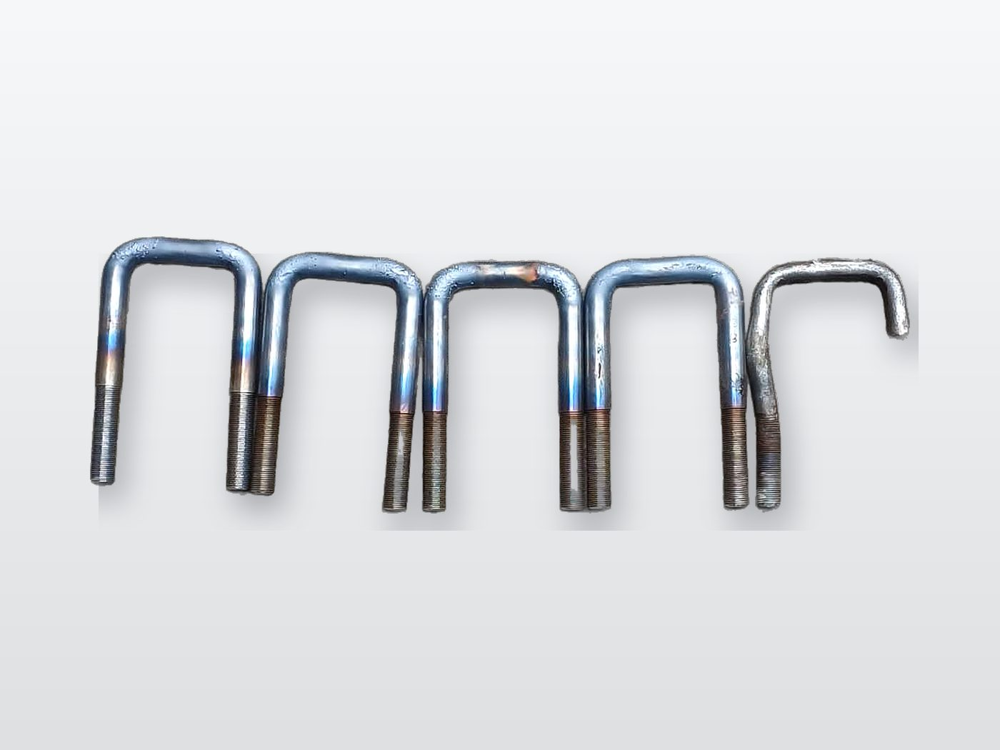
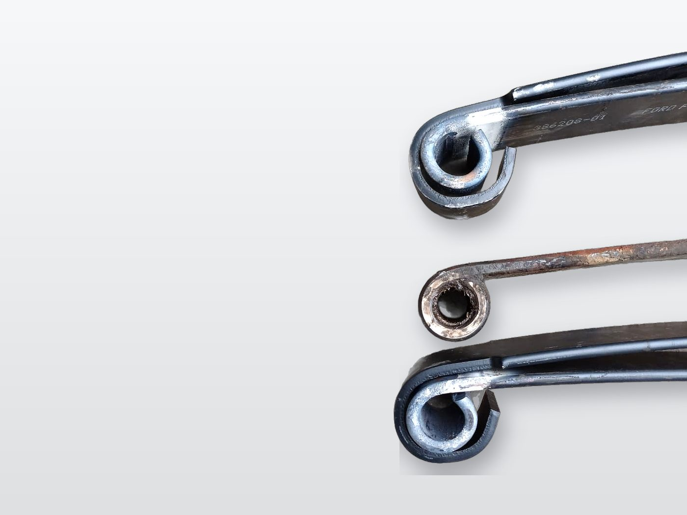
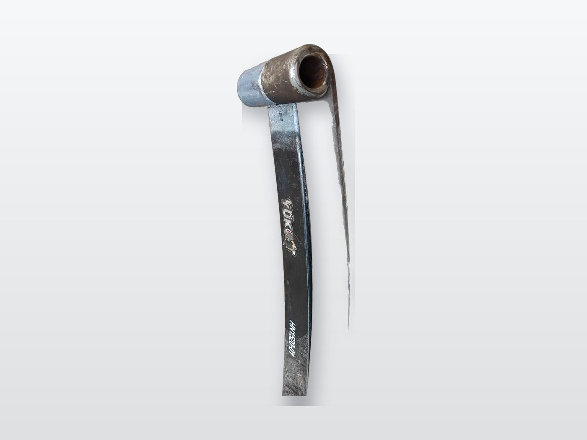
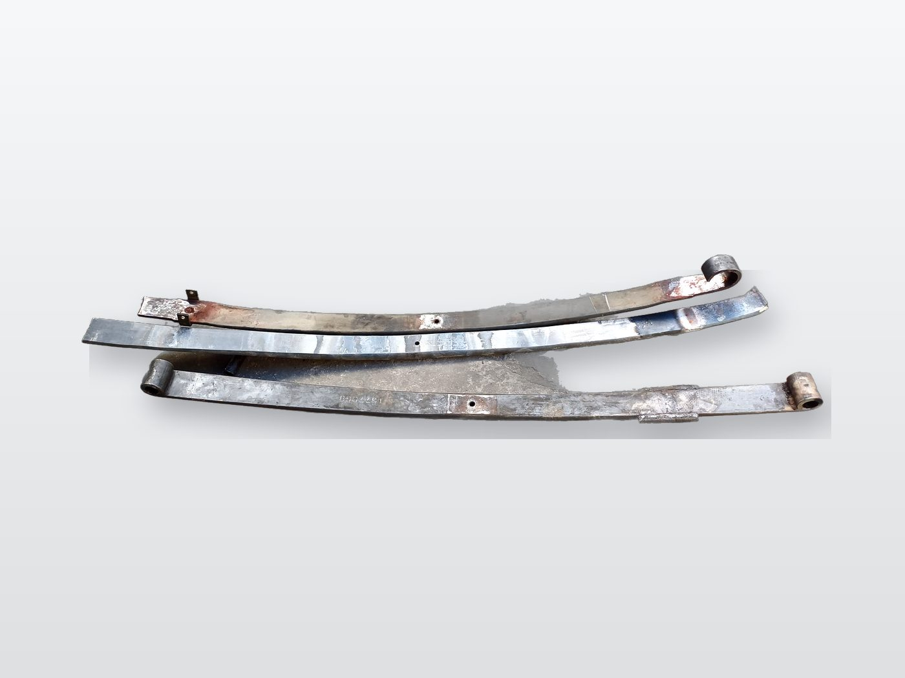
Resultados
Cómo medir su hoja
Con estas medidas y una foto le podemos dar precio y tiempo de entrega por WhatsApp. Use un flexómetro y mida la hoja más larga del paquete, la maestra.
¿No tiene cómo medir? Mande foto del paquete montado y de la placa o marca y modelo del vehículo. Con eso le orientamos.
Cotizador
Llene lo que sepa. El mensaje se arma solo a la derecha y se abre en WhatsApp para que lo envíe. Después adjunte la foto de su hoja en el mismo chat.
Preguntas frecuentes
Depende del vehículo, la medida y el espesor. Mándenos una foto de la hoja o el paquete con la marca y el modelo, y le cotizamos por WhatsApp.
Trabajamos bajo pedido para livianos y pesados. Con la muestra o las medidas fabricamos la hoja, aunque no se consiga en almacenes.
Sí. Traiga los pedazos o la hoja del otro lado del vehículo y la copiamos.
Es volver a darle curva al paquete en la mesa de trabajo. Con el uso y la carga las hojas se aplanan y el vehículo se baja; al varolarlas recupera su altura.
Son más duros y resistentes que el caucho común, se deforman menos y duran más, sobre todo en vehículos que trabajan cargados.
Sí, en Calderón y Quito. Coordinamos el día y la hora por WhatsApp.
Sí. Para empresas con varios vehículos coordinamos mantenimiento y cotizaciones por volumen.
Contacto
Taller
Calderón – San José de Morán
Diagonal al UPC San José de Morán. Atendemos de 07:00 a 17:00.
A domicilio
Calderón y Quito
Carapungo, Pomasqui, San Antonio, Guayllabamba, Tumbaco, Cumbayá y el resto de la ciudad.
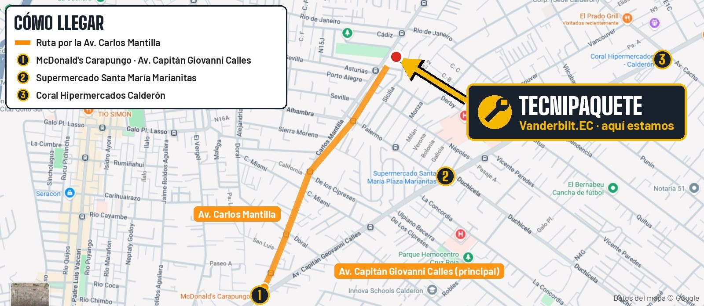
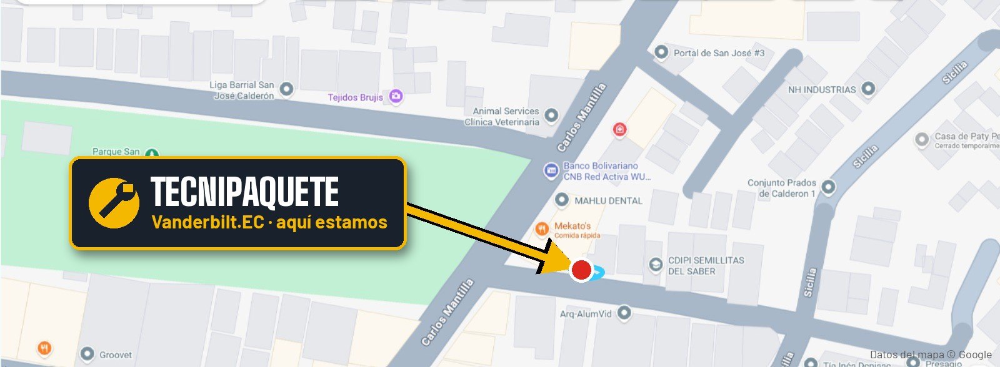